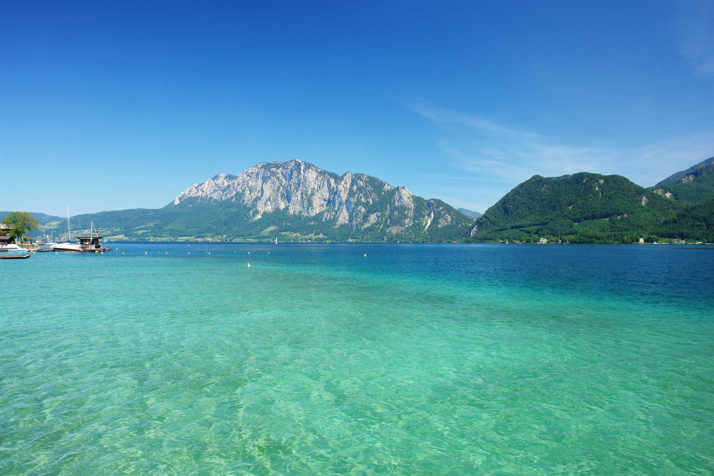

Attersee
Fläche: 46,2 km²
Details: Der größte See Oberösterreichs mit zahlreichen Naturbadeplätzen und klarem Wasser.
Der Attersee ist der größte See des Salzkammerguts in Oberösterreich und erstreckt sich
über eine Fläche von etwa 46,2 km². Mit einer Länge von rund 20 km und einer Breite von bis zu 4 km
bietet er zahlreiche Freizeitmöglichkeiten. Der See ist bekannt für seine hervorragende
Wasserqualität, die nahezu Trinkwasserniveau erreicht, und ist ein beliebtes Ziel für Segler
und Schwimmer.
Entlang des Attersees gibt es mehrere öffentliche Strandbäder, die freien Zugang zum See ermöglichen:
-
Erlebnisbad Attersee:
Dieses Bad bietet eine 12 Meter lange Rutsche und vielfältige Freizeitmöglichkeiten für Familien.
-
Seebad Nußdorf: Hier finden Besucher schattige Liegewiesen und einen direkten Seezugang.
-
Seebad Schönauer Schörfling: Dieses Bad zeichnet sich durch
seine natürliche Umgebung und gepflegte Anlagen aus.
-
Strandbad Seewalchen: Mit einem 10 Meter hohen Sprungturm
ist es ein Anziehungspunkt für Mutige und bietet großzügige Liegeflächen.
-
Solar Strandbad Steinbach: Dieses Bad verfügt über ein beheiztes Becken
mit Wasserrutsche und ist besonders familienfreundlich.
-
Strandbad Unterach: Hier gibt es eine große Liegewiese und einen flachen Zugang zum See, ideal für Kinder.
-
Strandbad Weyregg: Ein Highlight ist der wasserspeiende Drache "Weyreggulix",
der besonders bei Kindern beliebt ist.
